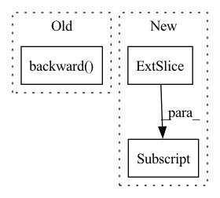

Pattern ID :32131
Before Change
preds = torch.stack(output_list, dim=1)
loss = criterion(preds, targets)
optimizer.zero_grad()
loss.backward()
optimizer.step()
p_bar.set_description(f"Loss: {loss.item():.4f}")
return torch.squeeze(preds)
After Change
grad_outputs = torch.eye(out.shape[-1], device=targets.device)
for g_idx in range(grad_outputs.shape[0]):
param.grad.zero_()
instantaneous_eligibility_trace[g_idx] = torch.autograd.grad(out[:, g_idx] , param, retain_graph=True)[0][g_idx]
eligibility_trace.append(instantaneous_eligibility_trace)
preds = torch.stack(output_list, dim=1)
mean_error = targets - predsIn pattern: SUPERPATTERN
Frequency: 3
Non-data size: 3
Instances Fragment ID: 94083992
Project Name: neurotorch/neurotorch
Commit Name: 4028f8f7fcb44b43d6235c1d12c734f809b1e629
Time: 2022-11-28
Author: 50332514+JeremieGince@users.noreply.github.com
File Name: src/neurotorch/learning_algorithms/debug_e_prop.py
M Class Name: AnonimousClass
N Class Name: AnonimousClass
M Method Name: dummy_train(1)
N Method Name: dummy_train(1)
M Parent Class:
N Parent Class:
M File Name: src/neurotorch/learning_algorithms/debug_e_prop.py
N File Name: src/neurotorch/learning_algorithms/debug_e_prop.py
M Start Line: 51
M End Line: 64
N Start Line: 45
N End Line: 76
Before Change
fnet_loss = FLAGS.warp_scaling * warp_loss + fnet_loss.detach()
fnet_loss = fnet_loss.cuda()
fnet_optimizer.zero_grad()
fnet_loss.backward()
fnet_optimizer.step()
update_list_avg += [tb, dt_ratio]
update_list_name += ["t_balance", "Dst_ratio"]
After Change
gen_flow_back = upscale_four(fnet_input_back[:, 0:2] * 4.0)
gen_flow_back = torch.reshape(gen_flow_back,
(FLAGS.batch_size, t_size // 3, 2, FLAGS.crop_size * 4, FLAGS.crop_size * 4)) Fragment ID: 94083987
Project Name: dwightfoster/pytorch-tecogan
Commit Name: b64afd58ac37b8b9ed21dc91b415612572cfa585
Time: 2021-03-11
Author: dwightfoster03@gmail.com
File Name: code/train.py
M Class Name: AnonimousClass
N Class Name: AnonimousClass
M Method Name: TecoGAN(11)
N Method Name: TecoGAN(13)
M Parent Class:
N Parent Class:
M File Name: code/train.py
N File Name: code/train.py
M Start Line: 47
M End Line: 347
N Start Line: 66
N End Line: 145
Before Change
loss += model_losses["moment"] * self.moment_loss_scale
optimizer.zero_grad()
loss.backward()
torch.nn.utils.clip_grad_norm_(self.parameters(), 100)
optimizer.step()
loop.set_postfix(loss=loss.item())After Change
actions=actions, train=True, teacher_forcing=teacher_forcing)
// loss
targets = input_frames[:, 1:]
_, total_loss = loss_provider.get_losses(predictions, targets)
if model_losses is not None:
for value in model_losses.values():
total_loss += value Fragment ID: 94083989
Project Name: ais-bonn/vp-suite
Commit Name: 1de690a43911d41c194f2067a282354e4af3f3c6
Time: 2022-02-24
Author: boltres@ais.uni-bonn.de
File Name: vp_suite/models/st_phy.py
M Class Name: STPhy
N Class Name: STPhy
M Method Name: train_iter(6)
N Method Name: train_iter(6)
M Parent Class: VideoPredictionModel
N Parent Class: VideoPredictionModel
M File Name: vp_suite/models/st_phy.py
N File Name: vp_suite/models/st_phy.py
M Start Line: 215
M End Line: 237
N Start Line: 220
N End Line: 238